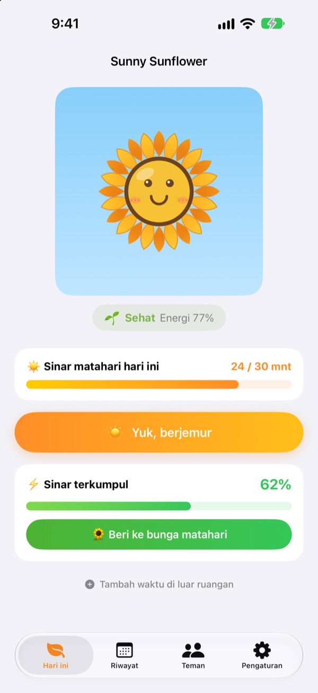
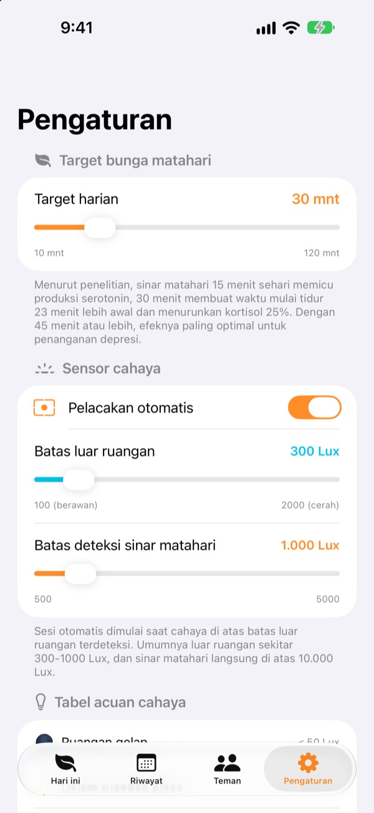
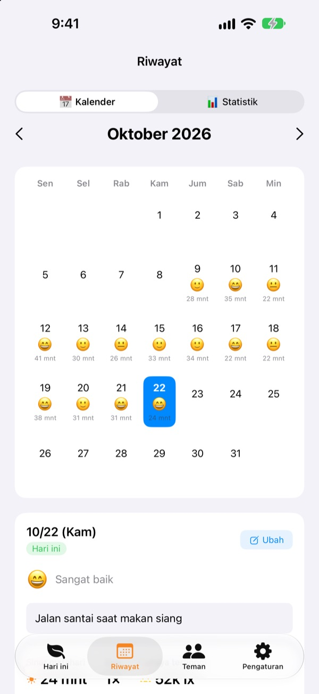
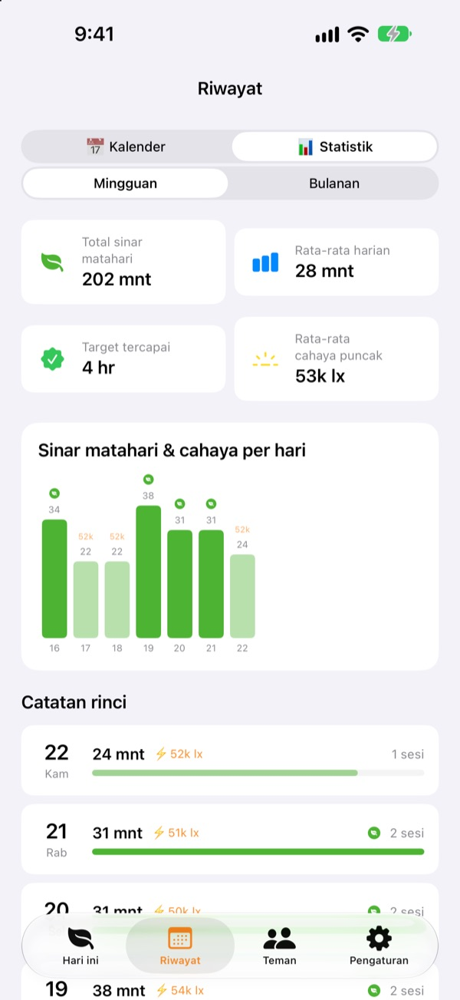

Sinar matahari hari ini
membuat bungamu tumbuh
Cukup keluar rumah, waktu berjemur terkumpul sendiri. Berikan sinar yang terkumpul ke bunga matahari supaya tetap segar. Kalau terlupa beberapa hari, bunganya mulai layu.
Semua fitur gratis. Catatan tersimpan di perangkatmu saja.

Coba kumpulkan sinar
Pilih seberapa terang dan berapa lama, berjemur, lalu berikan ke bunga matahari yang mulai layu.
Hari ini kamu kena matahari berapa menit?
Beberapa langkah ke kantor, keluar sebentar beli makan siang. Kalau seharian di dalam ruangan, baru sadar malam harinya bahwa hampir tidak kena sinar matahari. Sunny Sunflower menunjukkan waktumu di luar dalam angka, dan bunga mataharimu menunggu jalan-jalan besok.
Keluar saja, langsung terukur
Ketuk Yuk, berjemur lalu keluar. Aplikasi memperkirakan terang di sekitarmu dari data eksposur kamera depan. Begitu cahaya bertahan seterang luar ruangan sekitar 30 detik, pencatatan dimulai. Tidak pernah mengambil atau menyimpan foto.
Setelah itu sensor hanya menyala 20 detik setiap 2 menit agar hemat baterai.

Catat sinar dan suasana hati setiap hari
Di kalender, setiap hari punya waktu berjemur, emoji suasana hati, dan catatan singkat. Sempat di luar tapi tidak terukur? Pakai Tambah waktu di luar ruangan untuk menambah 5 sampai 120 menit.

Seminggu dan sebulan dalam sekali lihat
Statistik mingguan dan bulanan menunjukkan hari-hari target tercapai dan rata-rata waktu berjemurmu. Atur target harian 10 sampai 120 menit dan lihat langsung di layar utama berapa menit lagi yang kurang hari ini.
Widget di Layar Utama dan Layar Terkunci, juga Dynamic Island, menampilkan sinar hari ini dan kondisi bungamu.

Mulai dalam tiga langkah
- 1
Atur target harian
Awalnya 30 menit. Di Pengaturan bisa diubah antara 10 dan 120.
- 2
Keluar dan berjemur
Ketuk
Yuk, berjemurdan biarkan aplikasi terbuka saat keluar. Izin kamera hanya diminta sekali. - 3
Beri ke bunga
Ketuk
Beri ke bunga matahariuntuk mengubah sinar terkumpul menjadi energi.
Bagaimana cahaya jadi sinar terkumpul
- Di bawah 300 lux
- Cahaya redup: tidak dihitung sebagai waktu berjemur
- 300–1.000 lux
- Luar ruangan/berawan: 1–3% per 10 menit
- 1.000–10.000 lux
- Sinar matahari: 3–33% per 10 menit
- 10.000 lux ke atas
- Matahari terik: lebih dari 33% per 10 menit
- Sinar terkumpul
- menit × rata-rata lux ÷ 3.000 (maksimal 100% sekali catat)
- Energi bunga matahari
- turun 2,5% per jam, sekitar 60% sehari
Batas luar ruangan bisa diatur antara 100 dan 2.000 lux di Pengaturan. Bawaannya 300 lux.
Pertanyaan umum
Bagaimana sinar matahari diukur?
Aplikasi memperkirakan terang di sekitarmu (iluminansi) dari data eksposur kamera depan. Kalau cahaya bertahan seterang luar ruangan sebentar, pencatatan dimulai sendiri. Tidak ada foto yang diambil atau disimpan.
Apakah boros baterai?
Setelah sinar matahari terkonfirmasi, sensor tidak menyala terus. Sensor bangun sekitar 20 detik setiap 2 menit untuk mengukur ulang, sisanya cukup dihitung dengan timer.
Bunga matahariku sering layu.
Bunga matahari kehilangan 2,5% energi setiap jam. Kumpulkan sinar lalu ketuk Beri ke bunga matahari. Saat cerah, 15–20 menit di bawah matahari langsung cukup untuk menutup kebutuhan sehari.
Aku di luar tapi tidak tercatat.
Pakai Tambah waktu di luar ruangan di bagian bawah layar utama untuk menambah 5 sampai 120 menit. Kalau saat mendung pencatatan sulit dimulai, turunkan batas luar ruangan di Pengaturan.
Bagaimana fitur teman bekerja?
Kalau kamu dan teman berdekatan (sekitar 10 m) dan sama-sama sedang mengukur sinar, kalian terhubung otomatis. Dengan orang baru, kalian perlu mengonfirmasi berjemur bersama dulu, setelah itu otomatis. Kelopak bunga jadi warna-warni lalu kembali ke warna asal dalam 3 hari, dan waktu bersama tersimpan di tab Teman. Keduanya perlu aplikasi ini serta izin Bluetooth dan jaringan lokal.
Benar-benar gratis?
Ya. Tanpa iklan dan tanpa pembelian, semua fitur bisa dipakai. Kalau suka, kamu bisa memberi tip di aplikasi, tapi tip tidak membuka fitur tambahan.
Bisakah catatan dicadangkan atau dipindahkan?
Semuanya tersimpan di perangkat tanpa server, dan 90 hari terakhir disimpan. Tidak ada fitur ekspor tersendiri, tapi catatanmu ikut dalam cadangan iPhone biasa di iCloud atau komputer.
Bagaimana menghapus semua data?
Di pengaturan aplikasi, ketuk Reset data, atau hapus aplikasinya. Tindakan ini tidak bisa dibatalkan.
Ke mana melaporkan masalah?
Kirim email ke alamat di bawah atau buka issue di GitHub (github.com/M1zz/SunlightTracker/issues). Sebutkan model perangkat, versi iOS, dan apa yang terjadi agar lebih mudah dicek. Biasanya kami membalas dalam beberapa hari.
Ada pertanyaan atau masukan? Kirim ke leeo@kakao.com.